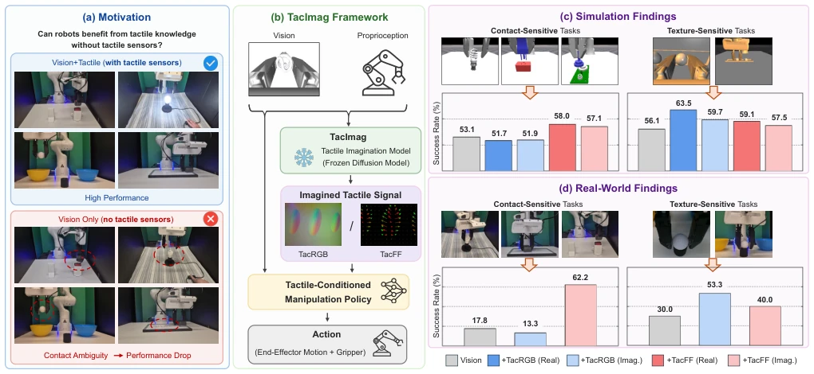
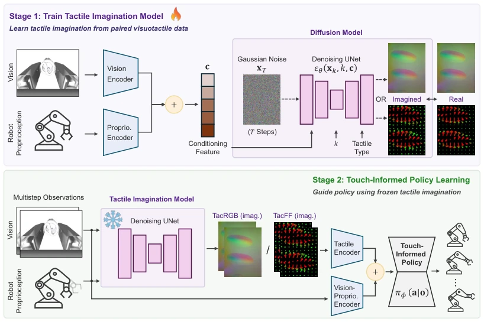
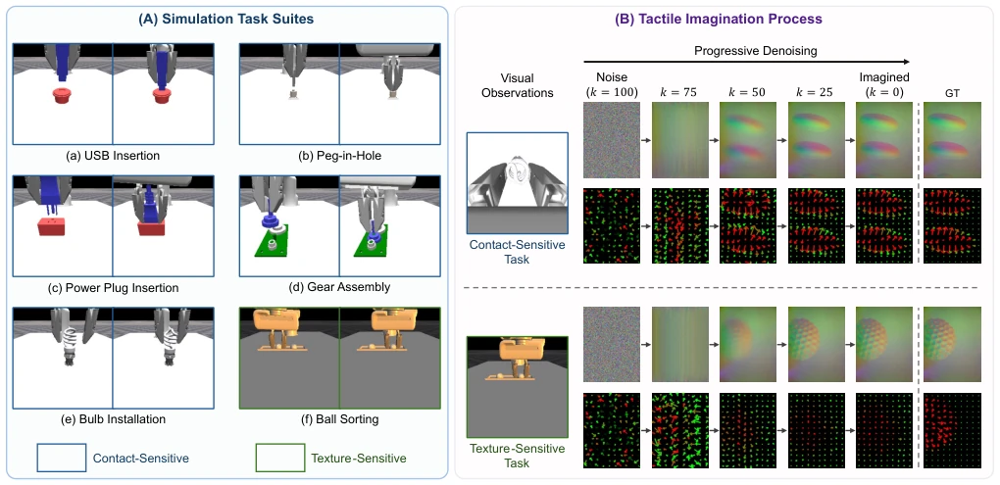
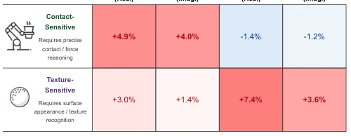
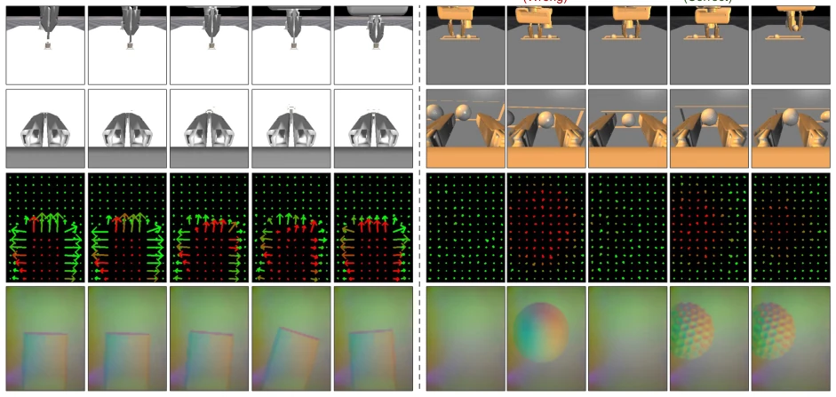
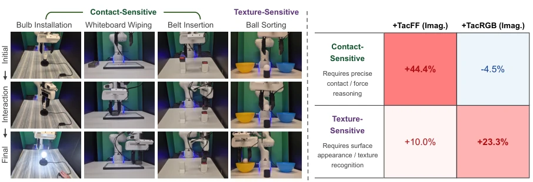
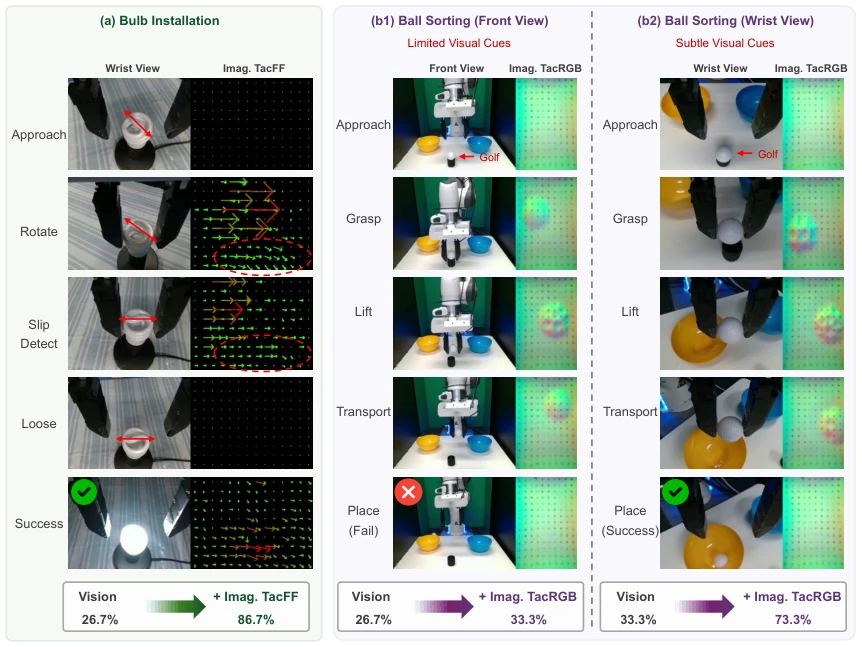

This paper attempts to save hardware by "hallucinating" tactile feedback; the idea is appealing, but essentially it is reprocessing of visual features. It does not address the fundamental issue of missing tactile data, but merely converts contact cues that are difficult to utilize in vision into a tactile format understandable by the policy. The advantage is low deployment cost, while the disadvantage is that if vision fails, the imagination collapses. One should not expect it to create something from nothing; it merely transforms "invisible" contact into "visible" tactile maps. This "vision-to-tactile" conversion layer actually acts as a supervision signal for contact perception, helping the policy mine latent contact structures within vision, rather than simply recovering missing data. Although the results are significant, it relies on the integrity of visual cues, representing a variant of "even the cleverest housewife cannot cook without rice", but it is indeed a cost-saving trick for engineering deployment.
Tactile sensors are fragile and expensive [11], [12], deployment is cumbersome, requiring calibration and maintenance, which limits large-scale application. Pure vision strategies are prone to failure in contact tasks [5], [6], making it difficult to infer forces and micro-contacts, especially under occlusion or poor lighting. Existing work mostly focuses on generation quality [20]-[23] or implicit distillation [26], failing to verify the actual gain of imagined touch for downstream policies. This paper seeks to answer: When sensors are absent, can tactile knowledge be reused via imagination? This approach combines the richness of training data with the simplicity of deployment hardware, addressing the fragility issue of tactile hardware.

Fig. 1. TacImag: Touch-informed manipulation without tactile sensors. (a) Motivation. Vision-only policies often fail in contact-rich manipulation because contact states are difficult to infer from visual observations alone. In contrast, policies equipped with tactile sensing can directly access contact information and achieve substantially higher performance. (b) TacImag framework. TacImag first trains a tactile imagination model to predict tactile observations from visual observations and proprioceptive states. The trained imagination model is then frozen and used to generate imagined tactile signals, which are subsequently consumed by a tactile-conditioned manipulation policy. (c) Simulation findings. The effectiveness of tactile imagination depends strongly on tactile representation an
Two-stage framework. Stage 1 trains a conditional diffusion model to predict touch from vision + proprioception (TacRGB/TacFF). Stage 2 freezes the model, using the generated imagined tactile signals as input to train a touch-conditioned policy (Diffusion Policy [1]). The key design is that gradients are not backpropagated to the imagination model during policy training, isolating its influence. By comparing TacRGB and TacFF, the impact of different tactile representations on tasks is analyzed. The model is based on DDPM, learning the conditional distribution of tactile observations rather than deterministic prediction. TacRGB preserves texture, TacFF encodes force fields, addressing different task requirements respectively. TacImag does not pursue perfect reconstruction, but generates tactile representations beneficial for policy utilization.

Fig. 2. TacImag framework. TacImag enables touch-informed manipulation without tactile sensors at deployment. In Stage 1, a tactile imagination model is learned from paired visuotactile demonstrations using a conditional diffusion model that predicts tactile observations from visual observations and proprioceptive states. Separate models are trained for TacRGB and TacFF representations. After training, the imagination model is frozen. In Stage 2, imagined tactile observations generated by the frozen model are combined with visual and proprioceptive information to train a touch-informed manipulation policy. At deployment, the robot operates using only visual observations and proprioceptive states while internally generating tactile representations online.
6 simulation tasks [5], [13], 4 real tasks (Franka Panda). Metric is success rate. Results: Imag TacFF is close to Real TacFF, contact tasks improved by 44.4%. TacRGB is more effective for texture tasks. It was found to be affected by viewpoint; performance is poor when front-view texture cues are weak [7]. This proves imagined touch serves as contact perception supervision, not hallucination. In simulation, Imag TacFF outperforms Real TacFF in plug-in tasks. The real world validates the feasibility of Sim-to-Real, requiring no tactile sensors.

Fig. 3. Simulation tasks and tactile imagination process. (A) Simulation benchmark used for evaluating TacImag. Tasks (a)–(e) are contact-sensitive manipulation tasks, including insertion and assembly scenarios where task success primarily depends on accurate contact interactions. Task (f) is a texture- sensitive sorting task that relies on object appearance and surface texture. For each task, the left image shows the initial state and the right image shows the goal state. Contact-sensitive tasks are trained and evaluated using wrist-view observations, whereas the texture-sensitive sorting task uses front-view observations. (B) Examples of tactile imagination using conditional diffusion models. Given visual observations and proprioceptive states, the model progressively denoises a tactile

Fig. 4. Average success-rate improvement (%) over the Vision base- line for contact-sensitive and texture-sensitive tasks. Contact-sensitive tasks correspond to USB insertion, power-plug insertion, peg-in-hole, gear assembly, and bulb installation, while texture-sensitive tasks correspond to ball sorting. Physical tactile sensing and imagined tactile observations exhibit consistent task-dependent trends: TacFF provides larger gains on contact-sensitive tasks, whereas TacRGB is more beneficial for texture- sensitive tasks. The comparable improvements achieved by imagined tactile observations indicate that TacImag successfully captures task-relevant tactile information without requiring tactile hardware during deployment.

Fig. 5. Case studies of tactile imagination on contact-sensitive and texture-sensitive tasks. (a) In the peg-in-hole task, imagined TacFF remains weak before contact and becomes structured after contact, revealing force directions and contact geometry that facilitate alignment and insertion. (b) In the ball sorting task, imagined TacRGB captures discriminative surface appearance and texture cues. When the gripper contacts the wrong object, the imagined TacRGB shows a smooth appearance corresponding to the ping-pong ball. After repositioning to the target golf ball, the imagined TacRGB reveals the characteristic dimple pattern, enabling successful object identification. For visualization, both front and wrist views are shown. During tactile imagination, contact-sensitive tasks use the wrist

Fig. 6. Real-world experiments and findings. (a) Real-World Task Suite. Real-world manipulation tasks including bulb installation, whiteboard wiping, belt insertion, and ball sorting. Each task is visualized at three representative stages: initial, interaction, and final. (b) Real-World Findings. Average success-rate improvement (%) over the vision-only baseline. Contact-sensitive tasks correspond to bulb installation, whiteboard wiping, and belt insertion, while texture-sensitive tasks correspond to ball sorting. Imagined TacFF provides the largest gains on contact-sensitive tasks, whereas imagined TacRGB is most effective for texture-sensitive object discrimination. Results for ball sorting are averaged over front-view and wrist-view settings.

Fig. 7. Real-world tactile imagination rollouts. (a) In bulb installation, imagined TacFF becomes structured after contact and revealing force directions associated with alignment, rotation, and localized slip events, leading to a large improvement over the vision-only policy (26.7% →86.7%). (b1–b2) In ball sorting, TacImag exhibits viewpoint-dependent behavior. With front-view observations, the visual cues for surface texture are weak, resulting in only limited improvement from imagined TacRGB (26.7% →33.3%). With wrist-view observations, local surface cues become more visible during grasping and transport, allowing imagined TacRGB to reveal discriminative texture patterns and substantially improve performance (33.3% →73.3%). These results suggest that TacImag does not hallucinate new inf